Jacquard — User Guide v1.1.0
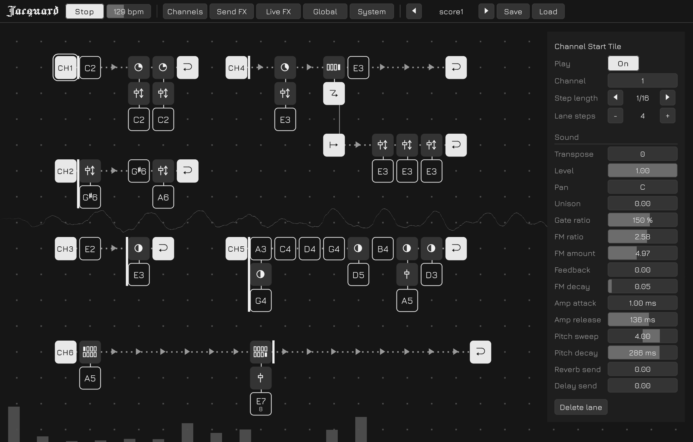
Introduction
Jacquard is an experimental tile-based music sequencer. Instead of arranging notes on conventional tracks, you build sequences by placing and stacking tiles on a two-dimensional grid. Notes, parameter locks, gates, and branches can be combined to create patterns that evolve and change as they repeat.
This guide covers the whole app. Basic Concepts explains what the tiles do and how playback reads them off the grid; from The Screen onwards the guide works through what is on screen piece by piece — the score plane, the panels, and everything each of them sets.
It does not have to be read front to back. If you would rather start by playing, open the Web build, put a few note tiles on the plane and press Play; the rest of the guide reads more easily once something is sounding.
An aside, by way of thanks: Jacquard takes its cues from a handful of things that came before it — programmable sequencers such as Hundred Rabbits' Orca, the sound design of Elektron's Model:Cycles, and the pared-back interface of Fors Lab's FMS.
Try It on the Web
A Web build is available, so you can try Jacquard in a browser without installing anything.
www.keijiro.tokyo/jacquard-web/Note that the Web version keeps saved scores in the browser's storage, which the browser may clear at any time, and there is no way to back them up as external files. Treat anything made there as temporary — see Scores and Files.
Basic Concepts
At its simplest, Jacquard works like a regular step sequencer. Place note tiles along the timeline to create a repeating sequence.
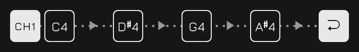
Tiles can also be stacked vertically. Notes in the same stack are played together, so stacking C, E, and G creates a C major chord.
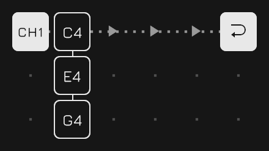
Stacks can contain more than notes. Parameter Lock tiles can be added to change sound parameters for a particular step.
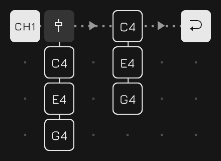
There are also conditional tiles that control whether other tiles in the stack are triggered. For example, a Chance Gate can make a note play only 50% of the time.
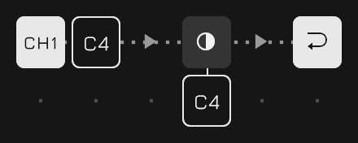
The order of tiles in a stack matters. A gate affects the tiles that follow it, allowing different parts of the same stack to behave differently.
For example, C and E can play every time while G is triggered only 50% of the time.
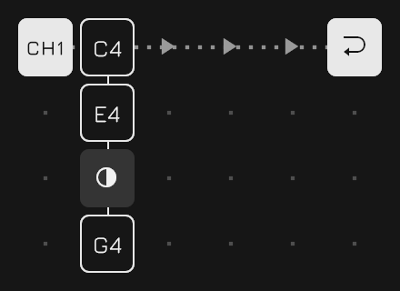
Cycle Gates add another kind of condition. They can trigger tiles only on specific repetitions of the sequence, making it easy to create patterns that change over several loops.
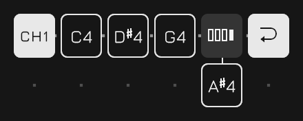
Sequences do not have to follow a straight path either. Jump tiles can redirect playback to another position, creating branches and alternative routes through a pattern.
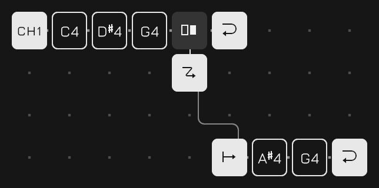
By combining stacks, parameter locks, gates, and jumps, a small grid can produce sequences with much more structure and variation than a conventional repeating pattern.
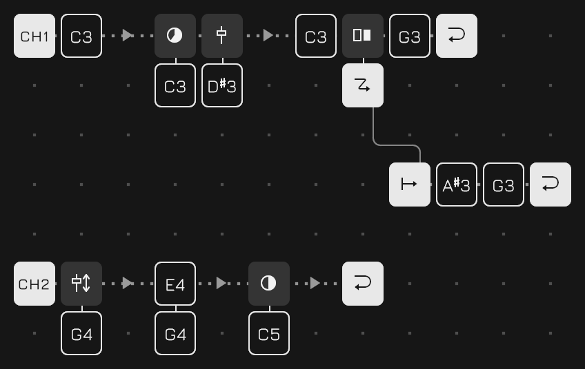
The Screen
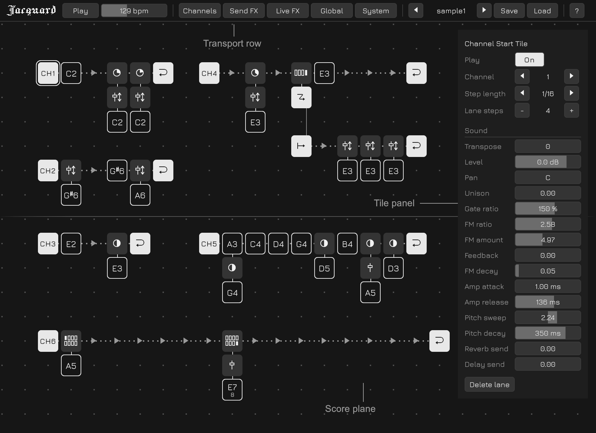
Past the edge of the screen
On a phone or a tablet the transport row holds more than the screen does, so it is dragged sideways to reach the end of it. A column of panels longer than the screen is dragged up and down the same way.
The transport row
| Play | Starts and stops the sequence. The space bar does the same |
| bpm | The tempo, 20 to 300. The delay is kept in time with it |
| Channels | Opens the Channels panel |
| Send FX | Opens the Send FX panel |
| Live FX | Opens the Live FX panel |
| Global | Opens the Global Settings panel |
| System | Opens the System Settings panel |
| The score name | The score folder stepped through with the arrows beside it, with Save and Load after it — see Scores and Files |
| ? | Opens this guide in a browser |
Numbers are bars
Drag a bar right or up to change it, and hold shift for a fine movement. Double-click it to type a number instead, which may go past the ends of the bar: the bar is where the travel is spent, not the whole of what the parameter will take.
Double-click the name beside a bar and the row lets go — a lock drops that parameter, and a channel's sound goes back to where a fresh patch holds it.
Moving about
Drag from an empty cell to pan the plane; a two-finger swipe or command-drag does the same from anywhere. Dragging a tile carries the tile, and dragging a lane's head cell carries the lane, so what a drag means is whatever is under it.
| Space | Play or stop |
| Arrow keys | Move the cursor |
| Return | Sound the note under the cursor |
| Delete | Remove the tile under the cursor |
| Shift + ↑ / ↓ | Transpose a note by a semitone |
| Shift + ⌘ + ↑ / ↓ | By an octave |
Inside a Score
A score is one plane, and everything is written on it — every channel, every part, every branch. These are the words the rest of this guide uses for what is on it.
| Channel | One of eight streams, each with a sound of its own |
| Lane | A row of steps. Time runs left to right along it |
| Step | One column of a lane |
| Stack | The run of tiles hanging down from a step. Everything in one stack happens at the same instant, and there is no limit on how long it is |
| Tile | What is written on a cell, one per cell |
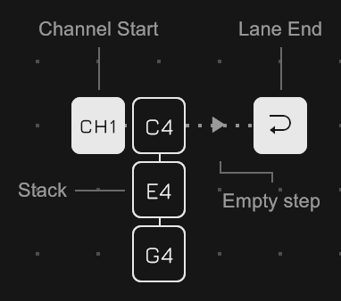
The tiles
| Note | The thing that sounds. A letter, an octave, and a length in steps |
| Absolute Lock | Sets sound parameters to a value for the step it sits on. One lock can hold several at once |
| Relative Lock | The same, shifting them from wherever they are instead |
| Cycle Gate | Lets what is below it through only on the laps it names — a period from 2 to 32, with a switch per lap |
| Chance Gate | Lets it through at a percentage |
| Channel Start | The head of a lane |
| Lane End | The far end. Returns to the Channel Start the lap began at |
| Jump | Flies to another lane, from the step after it |
| Jump Target | The head of the lane it flies to. One Jump for one Jump Target |
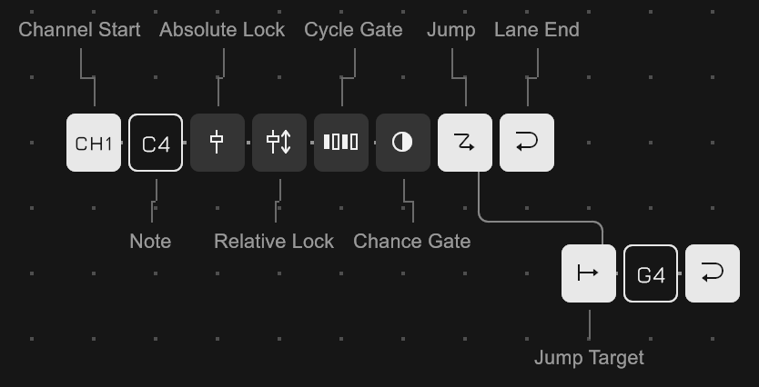
A lane can be put anywhere on the plane. What kind it is is said by its head cell and not by where it sits: a Channel Start makes it a lane of that channel, running whenever the channel does, and a Jump Target makes it a branch destination, entered only from a Jump. Whichever it is, its Lane End returns to the Channel Start the lap began at — so however far a lap wanders it comes back to the same place.
The Channel Start tile
Selecting one puts the lane's own settings on the panel, with the channel's whole sound under them.
| Play | Whether the lane runs at all |
| Channel | 1 to 8. It picks the sound as well as the stream, so lanes sharing a channel share a timbre |
| Step length | What note value one step is, from 1/1 down to 1/64. A sixteenth by default, and it is per lane — so lanes of different speeds run over one tempo |
| Lane steps | How long the lane is |
Double-clicking the Channel Start cell throws the Play switch too, which is the quick way to bring a part in and out while the piece runs.
Turning Play off does not cut the lane where the hand fell. The lap being played is played out, and after that no runner is sent again. Turning it back on does not resume where it left off either: it waits for the turn of the piece and comes in at the head of its lap, in step with everything else. A lane drawn while the sequence is running waits for the same moment, since there is nothing else for it to line up with.
That is a different thing from a channel's mute on the Channels panel. A mute is silent but still running, so letting go of it means hearing the lane from wherever the score has got to. Play off is not running, and there is no position to come back to.
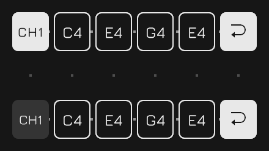
The order things are applied in
Everything happening at one instant is read as a single pass down the plane: within a stack from top to bottom, and between lanes in the order their Channel Start tiles stand from top to bottom. It is one rule and not two, and it is what makes gates and locks read the same way everywhere.
A gate stops the descent. Everything below it in the stack is skipped, and everything above it has already happened — which is why a gate placed partway down a chord divides it.
A lock colours whatever is read after it: the notes below it in its own stack, and the notes the lanes below it make while its step lasts. It lasts for that step and nothing more — nothing accumulates across laps, so what a sound is at any instant can be read off the plane.
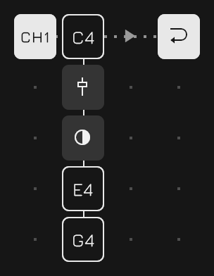
Several lanes in one channel
A single channel can contain multiple lanes. Each lane runs independently, so they can have different lengths and serve different purposes.
One simple use is polyrhythm: lanes with different loop lengths gradually shift against each other and create longer evolving patterns.
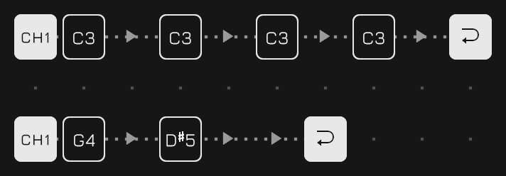
Another useful technique is to dedicate a lane to accents or other periodic parameter changes.
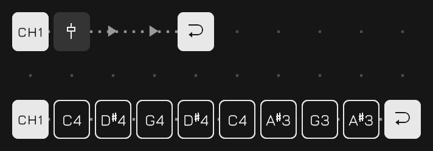
Because lanes are applied from top to bottom, a lane that changes parameters should generally be placed above the lane whose notes use those parameters. Below them it colours nothing.
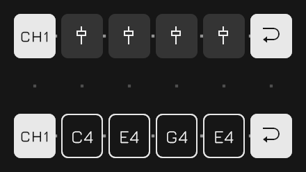
The master lane
The first lane of Channel 1 — the topmost one — has a special role: it is the master lane.
Its loop defines the synchronization boundary for the entire score, the turn of the piece. Queued score changes are applied when the master lane loops, and it also determines when newly started lanes begin playback.
In other words, the master lane acts as the musical clock for larger structural changes, making it possible to switch patterns and introduce parts while keeping everything aligned.
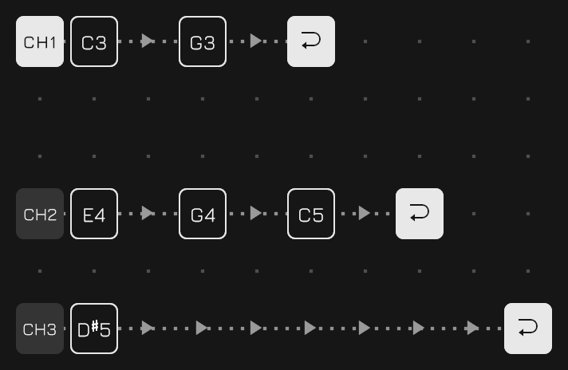
Which lane it is is decided by position rather than by a mark on it, so moving lanes about moves which one it is. It also cannot be silenced: its Play switch can be thrown and it is kept in the file, but the lane runs anyway — the lane that hands out the instant everything else starts on cannot be the one that stops.
Branching
A Jump on its own is only a longer lane written in two pieces. What makes it worth having is a gate above it: under a Cycle Gate the sequence takes the branch at a regular interval, and under a Chance Gate it takes it at random.
Reaching a Jump does not end the stack — the tiles under it belong to the same instant, and the flying happens from the next step. A Jump placed on the rail row itself has nothing above it, so it can only ever be unconditional.
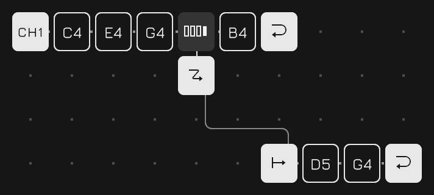
Editing
Double-click a tile to copy its entire stack to the copy buffer. Double-click an empty slot to paste the buffered stack there. This makes it quick to duplicate chords, parameter locks, or more complex stacks without rebuilding them tile by tile.
Drag a tile to move it, and whatever hangs below it comes too; within its own step that reorders the stack. Drag a lane's head cell to move the whole lane. A drop with nowhere to go lights nothing and does not happen.
The Sound
A note is sounded by a two operator FM voice: a carrier that carries the pitch and a modulator that colours it. The modulator's frequency is set as a ratio of the note's rather than as a frequency of its own, and how deep it reaches into the carrier is most of how bright the note is. Three envelopes shape the rest — one on the carrier's amplitude, one on the modulator's depth, and one that moves the pitch itself.
A channel holds one patch of these settings, reached by selecting its Channel Start cell: the whole of it stands on the Tile panel under the lane's own rows. There is no separate instrument editor, because there is nothing an instrument is here except the fifteen numbers below — and those fifteen are exactly what a parameter lock can reach. There is nothing about a channel a single step cannot take hold of.
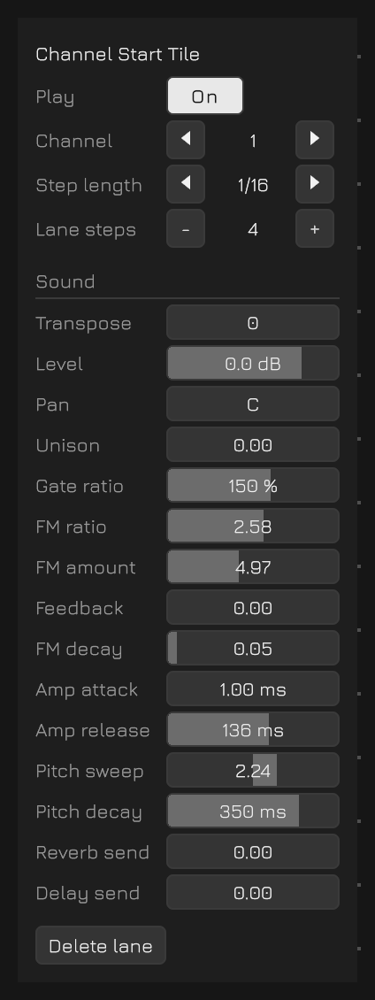
| Transpose | Semitones the channel's notes are moved by, two octaves either way on the bar. It is spent as the note is made, so it is the one parameter the synth never sees |
| Level | The channel's own level in decibels — silent at the bottom of the bar, and 6 dB at the top |
| Pan | Where the note sits across the image. The two sends take it unpanned |
| Unison | Above zero every note sounds twice, detuned apart and spread across the image. The image opens over the first three tenths of the bar and the rest goes on detuning |
| Gate ratio | Multiplies the length written on the note |
| FM ratio | The modulator's frequency as a ratio of the note's |
| FM amount | How deep the modulation goes, which is most of how bright the tone is |
| Feedback | How much of itself the modulator hears. Pushed up it turns the tone to noise |
| FM decay | How steeply that colour falls away: 0 is gone at once, 1 never leaves. A slope rather than a time, so it means the same thing at any note length |
| Amp attack | How long the note takes to arrive |
| Amp release | How long its tail is once the gate closes. It is also how long the note holds on to one of the twenty-four voices |
| Pitch sweep | How far the pitch falls into the note, in octaves; negative bends up into it instead. A steep drop is most of what a kick drum is |
| Pitch decay | How long that takes. Short is a thump, long is a dive or a riser |
| Reverb send | How much of the note reaches the reverb |
| Delay send | How much of it reaches the delay |
Double-clicking a parameter's name takes that one row back to where a fresh patch holds it.
Polyphony
The voices are not owned by the channels. They come from a single pool of twenty-four, shared by all eight and held only for as long as a note is sounding: a patch is what a voice is built from at the moment a note starts, not a voice standing ready. So one channel can take the whole pool for a twenty-four note chord if nothing else is playing, and eight channels sounding at once divide the same twenty-four between them.
Unison is the one thing that looks as though it should cost two voices and does not — the detuned pair is made inside the one voice, so it thickens a part without halving what is left for the rest. Amp release is what does cost: a note holds its voice until its tail has finished, not until its gate closes.
When the voices run out
An arriving note takes the quietest voice sounding, and of equally quiet ones the nearest to its end. A note quieter than everything already playing is dropped rather than taking a voice from it. Level is what decides both, so an accent is what survives a dense passage.
The Channels Panel
All eight channels at once, a row each, at the left edge. It is the one panel that holds the whole bank rather than one thing, since a mute is only ever pressed against what the rest of the mix is doing.
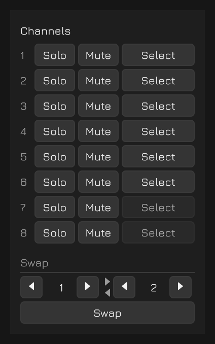
| Solo | Hear this channel and nothing else. Several can be soloed at once, and while anything is, the mutes are not consulted — they keep what they hold, so dropping the last solo hands back the mix that was underneath it |
| Mute | Silence this channel. Under a solo it dims and its presses are not acted on |
| Select | Puts the cursor on the Channel Start tile that names the channel, which is where its sound is reached. A channel with no lane of its own dims — the one place on screen that says which of the eight are in use |
A mute is silent but still running: the lane keeps its place in the bar and its laps go on counting, so letting a channel back in is hearing it from wherever the sequence has got to. That is what tells it from a lane's Play switch — see Inside a Score.
Both sets are saved with the score.
Send FX
One reverb and one delay for the whole project, and every channel sends into them. That split is the point of having effects on a sequencer like this one: what the effect does belongs to the piece, and how much of a sound goes into it belongs to the sound. So the two send amounts are in the patch with the rest of the timbre — and a lock can reach them. An Absolute Lock partway down a chord can throw the notes below it into the reverb and leave the ones above dry, which no amount of per-channel effect settings could say.
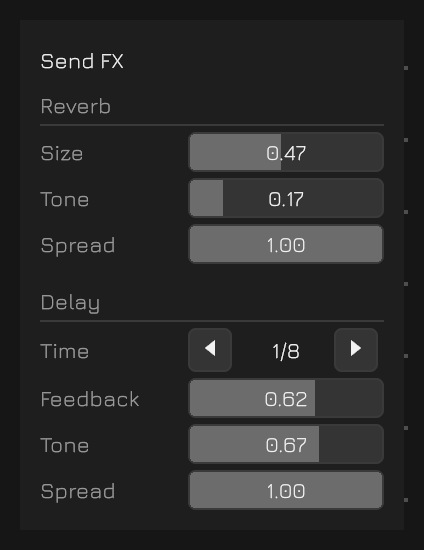
| Reverb Size | The tail, from a small room to a long hall |
| Reverb Tone | How much of the tail's top survives each lap |
| Reverb Spread | How wide it sits, from a correlated pair to fully spread |
| Delay Time | A note value against the beat rather than a number of milliseconds, so it stays in time when the tempo moves. Nine rungs from 1/32 to 1/4, triplets and dotted values among them |
| Delay Feedback | How much of a repeat comes back |
| Delay Tone | How much of a repeat's top survives, so the repeats dull as they go |
| Delay Spread | Straight stereo through to full ping-pong |
Both effects are saved with the score.
Live FX
Twelve buttons along the bottom that act only while they are held, on whatever the sequence is about to play. A note already sounding is never touched, and nothing here is written to the score or saved with it — so none of it is held to the scale or the transpose either.
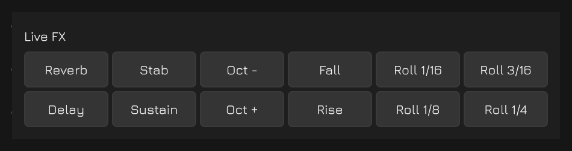
| Reverb / Delay | Every note goes all the way into that effect |
| Stab / Sustain | Gate and release cut short, or both doubled |
| Oct - / Oct + | An octave down or up |
| Fall / Rise | A semitone a step away from where the button was pressed, back to nothing after two bars |
| Roll 1/16 … 1/4 | One, two, three or four steps of the sequence, caught from where the button was pressed and played in place of what follows |
A roll of a sixteenth plays from the moment it is asked for; the longer ones let the sequence through for the rest of their own length, recording it, before they stand in for anything. A roll pressed where there is nothing to catch waits rather than holding the silence, so a sixteenth landing a step wide of the note you meant still rolls a note.
Anything held at once applies at once — an octave up under a stab, both sends, a rise through a reverb. The rolls are the exception, since all four stand in for the same sequence: the one pressed last is the one that plays, and letting it go hands back to whichever is still held. With a mouse only one button can be held at a time; a touch screen holds one per finger.
Global Settings
What is set for the whole piece and answers to no cell. Both groups are saved with the score.
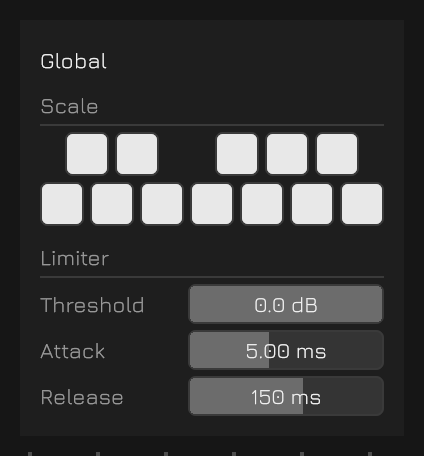
Scale
Twelve switches laid out as a keyboard, one per semitone, deciding which pitches the piece is allowed to land on. A note the scale does not allow is snapped to the nearest one it does rather than dropped — a note that does not sound is a hole in the music.
It takes effect at the moment of sounding and does not rewrite anything: the tiles keep the pitches they were written with, so a key can be tried and taken off again. A channel's Transpose is applied first and the scale after it, so a part moved into another register still lands in the key.
Limiter
| Threshold | Where limiting begins. This is the one that is played: the make-up gain follows it, so the mix gets louder as it gets harder rather than quieter |
| Attack | How quickly it takes hold |
| Release | How quickly it lets go |
System Settings
What is set about the app rather than about the piece. Nothing here is saved with a score; it is remembered for the machine it was set on.
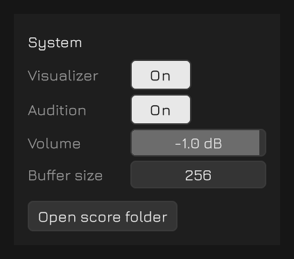
| Volume | How loud the whole thing leaves. It sits after everything else in the mix, so it makes the piece quieter without making it any softer — the limiter is doing the same work at any setting. Off at the bottom of its travel |
| Visualizer | The wash behind the score: the output as a trace across the middle, and the twenty-four voice slots as a row along the bottom. Starts on |
| Audition | Whether an edit sounds the note it just made — a bar let go of, a note written, a stack pasted, a transpose from the keys. Starts on. Turned off, all of that goes quiet, but Return still sounds the note under the cursor, since that is a note asked for rather than one volunteered |
| Buffer size | Reach for this if the sound bangs or drops out: how long a buffer the audio thread has to fill, from 256 frames up to 1024. A longer buffer survives a busy moment and costs that much delay between a Live FX button and what comes out. It is taken up at the next launch, which the panel says while the two disagree. On iOS, set it to 1024 before recording the screen — a shorter buffer can leave the recording's audio track broken |
| Stage Mode | For playing the app to a room rather than working in it. Starts off. On, Save leaves the transport row and the ? goes with it, and a double-click on a bar no longer opens a field to type in |
| Open score folder | Desktop only. Shows the directory the scores are written to |
Scores and Files
Every score is a plain text file in a single folder, and the chooser on the transport row is that folder read out rather than anything the app remembers. So every name on it is a file that is really there, and a file dropped into the folder simply appears in the list.
Reaching the folder
On desktop, the Open score folder button on the System panel reveals it in the file manager. On iOS, the same folder appears in the Files app under On My iPhone (or On My iPad), as Jacquard's own folder.
From there scores can be copied, renamed, backed up, or moved between devices. The app reads the folder again whenever it comes back to the front, since away is exactly where a file manager does its work.
Switching scores while playing
When a score is already playing, pressing Load does not switch scores immediately. Instead, the change is queued until the master lane reaches the end of its loop, and from exactly that instant the new score runs. The two carry on as though they had been written that way — no gap and no overlap, and whatever was sounding across the seam is left to decay rather than being cut.
While it waits, the plane and the panels that edit the score are dimmed, since what the switch is waiting on is a point measured on the lanes that are running. The mix and the performance controls stay alive: timbre, sends, the limiter, the tempo, the mutes and Live FX all go on working, which is the whole purpose of the feature.
The request cannot be taken back. Stop is what ends the wait, and the load then takes effect there and then.
The Web version
The Web build keeps its scores in the browser's own storage. A save survives a reload but not the site's data being cleared, there is no folder to open — so that button is not there — and nothing can be copied out as a file. Treat anything made there as temporary.